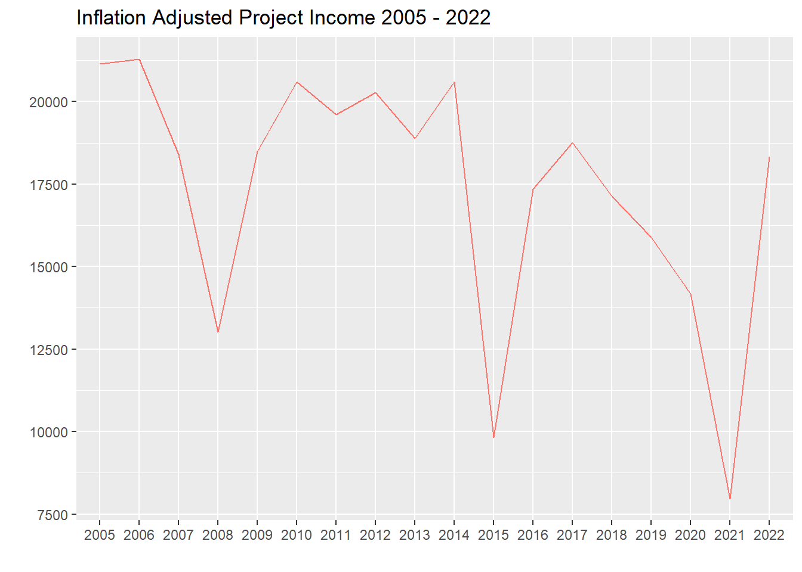
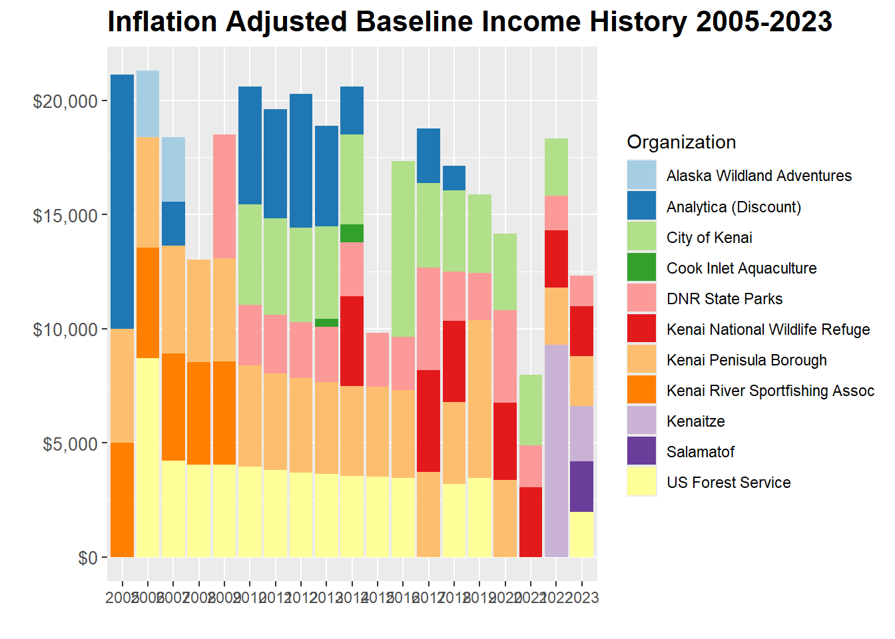

Joining with `by = join_by(year)`Appendix C — Project Financial History
Updated 2024-10-28, Benjamin Meyer, Kenai Watershed Forum (ben@kenaiwatershed.org)
D Summary
The Kenai River Baseline Water Quality Monitoring project is funded by both direct and in-kind financial support from community partners.
Costs include contractual laboratory expenses, research staff personnel time, equipment, and other smaller expense categories. Partners are invoiced on an annual basis.
Since 2005, 56% inflation of the U.S. dollar has reduced the value of resources available to the project.
In order to continue Kenai River water quality monitoring efforts, the project must either seek additional sources of funding or de-prioritize certain sampling sites or parameters.
E Introduction
E.1 Inflation and Declining Project Income


Project expense trends from years 2005 - 2022 are detailed in figure Figure E.2 and source data is available in the link below.

E.2 Income history
Project income history fluctuates annually as partner contributions vary. Figure Figure E.3 displays

Warning: Removed 122 rows containing missing values or values outside the scale range
(`geom_bar()`).
Warning: Removed 122 rows containing missing values or values outside the scale range
(`geom_bar()`).Plot and summarise Inflation-Adjusted KWF Baseline Water Quality Financial Income History
Joining with `by = join_by(year)`Warning: Removed 122 rows containing missing values or values outside the scale range
(`geom_bar()`).
Warning: Removed 122 rows containing missing values or values outside the scale range
(`geom_bar()`).